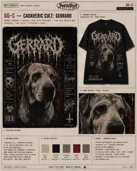

Clinical, grotesque and deliberately unpleasant. Goregrind uses specimen labels, pathology-sheet structure and sickly two-colour print language while Gerrard remains recognisable. It is not Grindcore with extra blood splatter.
Clinical case fileTwo-colour printSpecimen labelsControlled grotesque detail
CASE FILE 03 / GERRARD / GOREGRIND / DEVELOPMENT / CASE FILE 03 / GERRARD / GOREGRIND / DEVELOPMENT
01 / THREE CASE FILES
ONE SUBJECT. THREE DIAGNOSES.
Each route changes the visual hierarchy, image treatment and garment role. The clinical language connects them; the page does not recycle one composition three times.
CASE A / PRIMARY
GG-ALEAD ROUTE
Canine Pathology
A severe specimen portrait, medical labels and controlled diagram fragments. The dog stays dominant; clinical notation provides the atmosphere.
Hierarchy
Name → specimen → case data
Print
Bone + bile on black
Best on
Tee / fitted tee
GG-BBACK-PRINT ROUTE
Dissection Club
A multi-panel pathology report with clipped captions and a smaller front identifier. Dense, but organised like a genuine case sheet rather than a random collage.
Hierarchy
Case title → panels → subject
Print
Dirty white + dried red
Best on
Longsleeve / hoodie
CASE B / REPORT

GG-CMEMORIAL-LEANING ROUTE
Terminal Good Boy
The most restrained route: one portrait, one brutal medical headline and a sparse prognosis strip. It can carry emotional weight without becoming sentimental pet memorial merchandise.
FRONT / CASE NUMBERBACK / FULL PORTRAITSLEEVE / PROGNOSIS STRIP
02 / CREATIVE CONTROL
CLINICAL UGLINESS. NOT CHEAP SHOCK.
The concept must look like authentic underground merchandise, not a Halloween novelty shirt. Graphic intensity is controlled by composition, print economy and believable subject treatment.
What belongs
01Pathology forms, specimen tags and clinical typography
02Dirty two-colour print logic with deliberate ink coverage
03Grotesque detail used to support hierarchy, not fill space
04Gerrard’s broad muzzle, folds and small ears kept accurate
05Layouts rebuilt for each garment format
What gets rejected
01Stock blood splatter, random organs or generic biohazard filler
02The same Grindcore poster with medical labels added
03Realistic cruelty, suffering or exploitative animal imagery
04AI anatomy errors disguised as gore texture
05Unprintable muddy gradients and excessive fine detail
03 / GARMENT LOGIC
BUILT LIKE A CASE FILE.
Clinical detail only works when the print area remains readable. Each product gets a different information density and placement plan.
01 / PRIMARY
Tee
Large specimen portrait with a compact case-data strip.
FIRST PROOF02 / PRIMARY
Longsleeve
Back case sheet, small front number and sleeve prognosis text.
HIGH POTENTIAL03 / CORE
Pullover
Broad back report with a simplified chest identifier.
AFTER TEE04 / CORE
Zip Hoodie
Split-safe front labels with the specimen moved entirely to the back.
LAYOUT TEST05 / FIT
Girlie / Fitted
Narrow portrait crop and reduced clinical data, not a shrunk unisex block.
SEPARATE PROOF06 / ADD-ON
Sticker
Case number, nameplate or simplified pathology seal.
SUPPORTING
04 / BUILD STATUS
CASE FILES BUILT. PRODUCT NOT LIVE.
The Goregrind collection now has three differentiated routes. Final mockups, likeness review, print-area testing and supplier economics still have to be completed before a route becomes a sellable product.
Ordering disabled
DONEThree scene-specific design systems
NEXTSelect one route for garment mockups
THENMobile crop, likeness and print-legibility QA
BEFORE SALESupplier, cost, margin and UK fulfilment checks
 CASE A / PRIMARY
CASE A / PRIMARY